FAST
智能投放引擎 · AI Workbench
01 / 04
项目背景
现在要付的成本
产品要走到哪
- 短期
- 有经验的运营助手：开口就能接着配，不用在系统间搬运。
- 长期
- 把结构化工作自动化：规则内的排期、冲突、审批，Agent 自己走完。
Agent 坐在哪
入口
- 投放平台
- 个人助理
- 外部引擎
FAST Agent
澄清槽位 → 按规则规划 → 查冲突
回写
- 排期日历
- 投放决策
- 机会反馈
三层能力要换掉什么
营销系统各自为政
一次开口覆盖全触点
人在后台里串联每一步
规则内的结构化工作，Agent 自己走完
做完才知道撞了节、占错位
排期和名单上先看见优先级与节日
02 / 04
首页
为了符合用户习惯，我们首先对标市场上认可度最高的三大平台。三家首页都把输入放在正中，进门就能写。FAST 用同一结构：运营进来直接描述活动，不必先熟悉一套新后台。
竞品首页
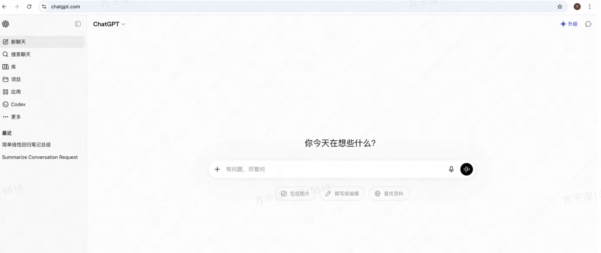
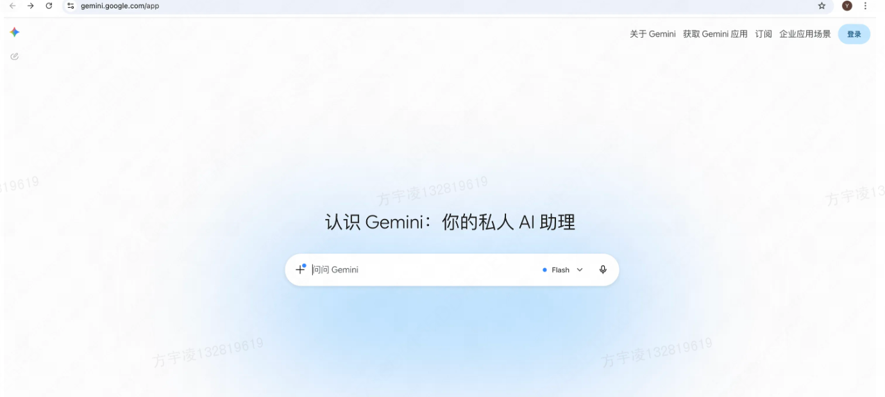
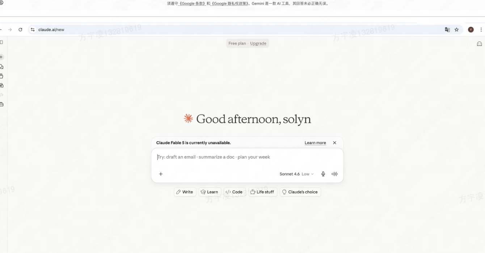
工作台结构
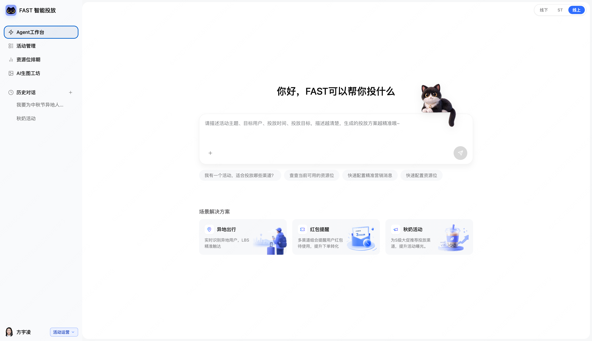
首页排布原因与优势
对话
输入框放在页面中心。进来写主题、人群、时间和目标即可，不用先理解后台层级。
猫猫
配投放要长时间对着屏幕。猫放在输入框上，给视线一个落点，也让连续工作有一点停顿。
场景方案
下方卡片按近期使用归纳高频活动，没想好主题时可以先点一张。点开后带出提示词示例，方便还不会写的人上手。
03 / 04
排期：AI coding 设计项目的全流程体验
先跑通线上业务，再从设计标准与视觉感受来进行迭代。
改之前
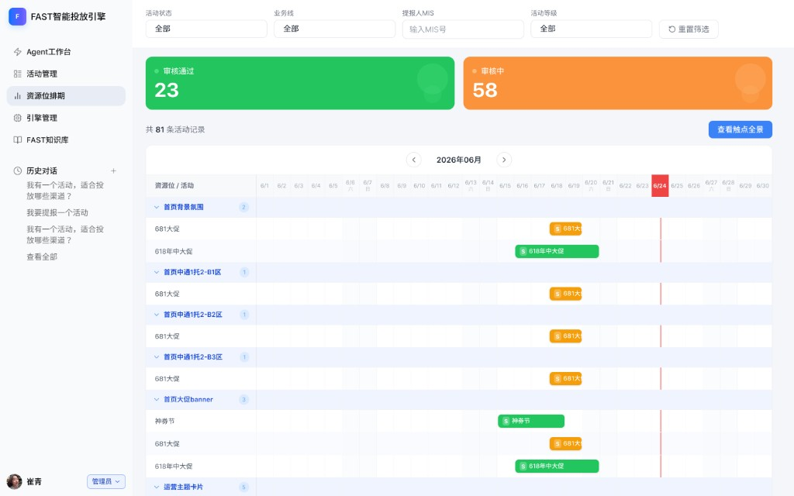
两大色块
审核通过、审核中占住视觉中心，几乎不帮人做排期判断。
表格乱
行距、对齐和条带长度都不稳，扫一个月要对很久。
颜色不统一
审核绿、橙和条带抢视线，等级看不出来。
竞品分析
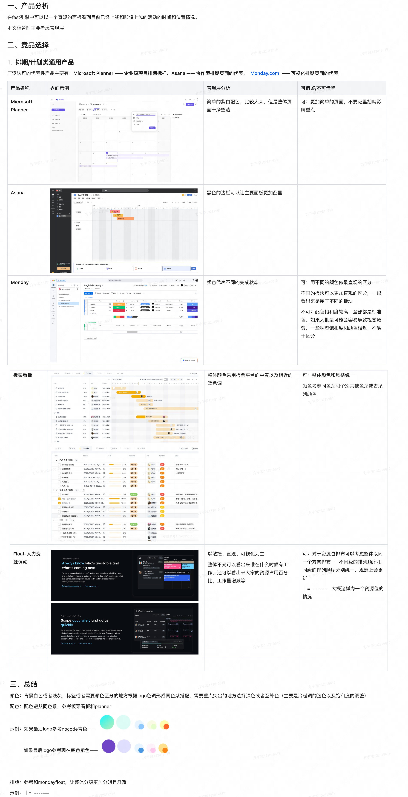
规范整理
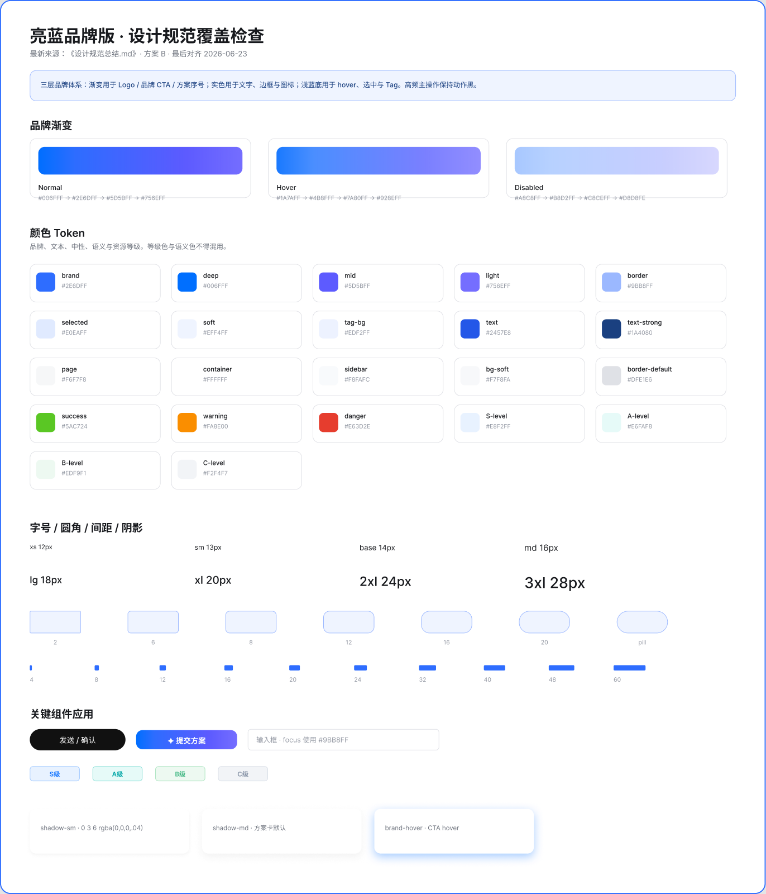
改之后
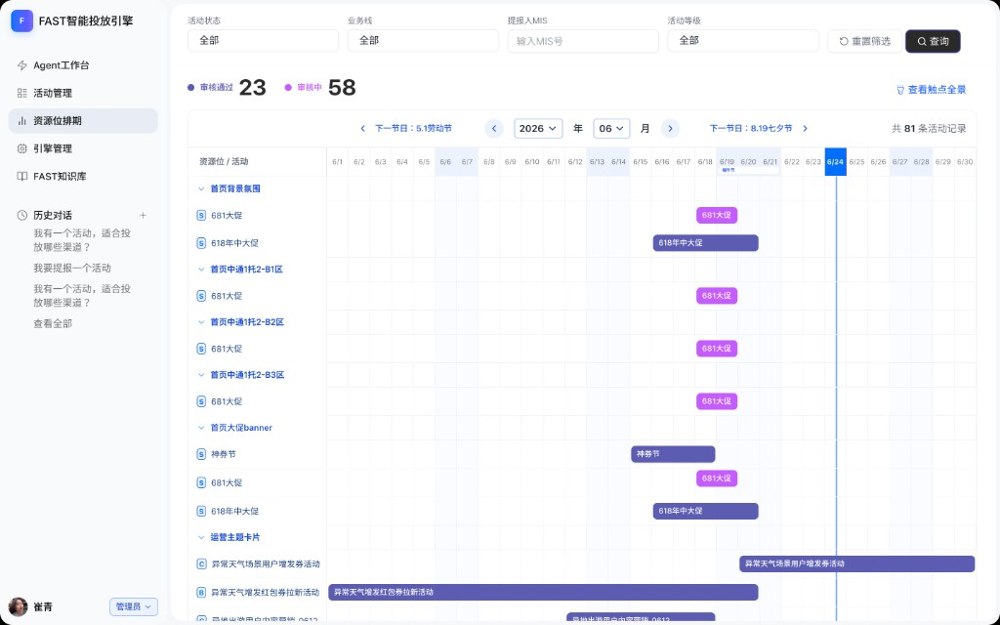
测试：标签颜色区分度不够
上线后根据产品测试反馈，标签的颜色对比度不明显，需要进行迭代，借助 AI 出具方案，并在方案基础上进行调整，得到新一版标签配色方案。
此外，统一了全局标签规范，并将活动等级名称与资源位区分开。
总结
通过实际项目进行 AI coding 能力的锻炼，同时体验 AI 实际项目的全流程，过程中不断与产品和研发进行沟通，最后得到高质量的 AI 作品。
04 / 04
活动：本身改动空间不大，但是依然存在细节问题
不能也不用做过多的改动，但是如何满足最便于运营查看的要求是关键。
改之前
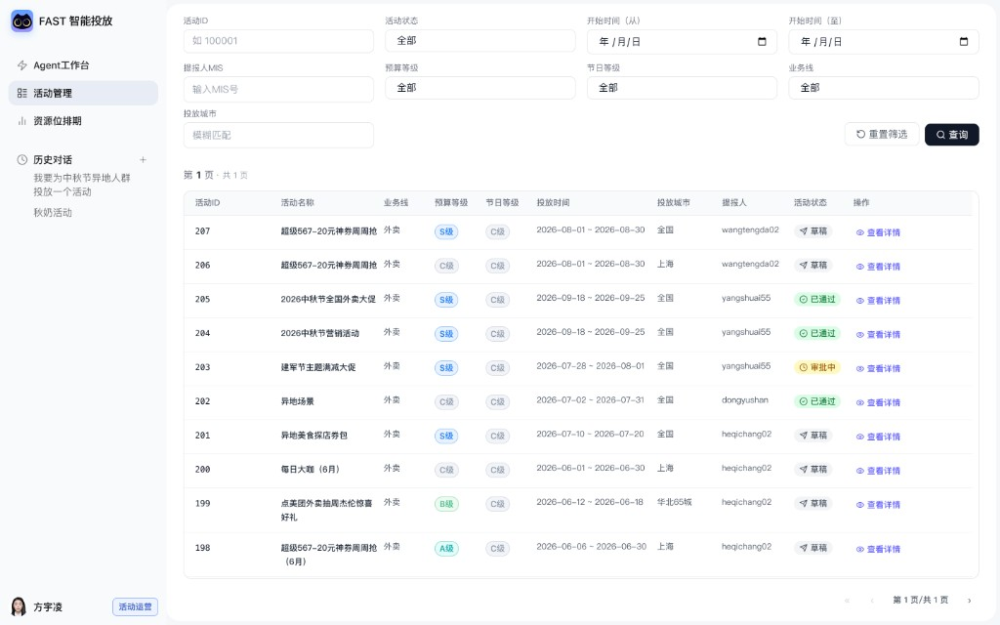
登记混乱
不同的等级混在一起，难以辨别背后含义。
视觉中心混乱
不同的颜色、不同长度的内容，意义不明的等级让人无法一眼发现重点是哪些列。
间隔混乱
内容间隔导致画面有些地方过于拥挤，有些又很奇怪的稀疏。
竞品分析
参考市面上使用表格页面以及专注于运营的页面，进行视觉上的再调整，以期符合运营同学的习惯和工作流程。
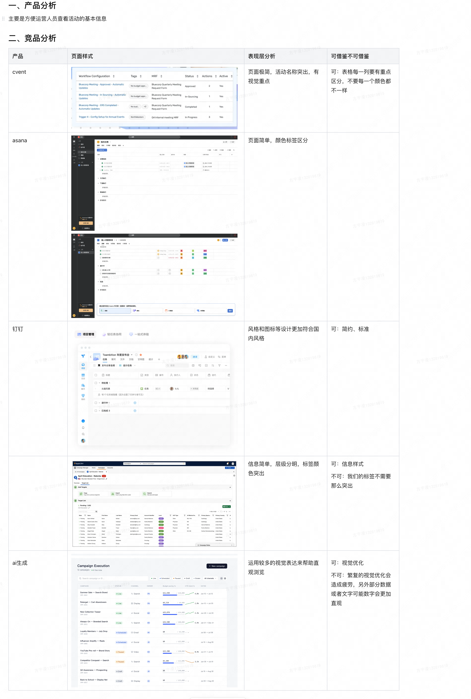
改之后
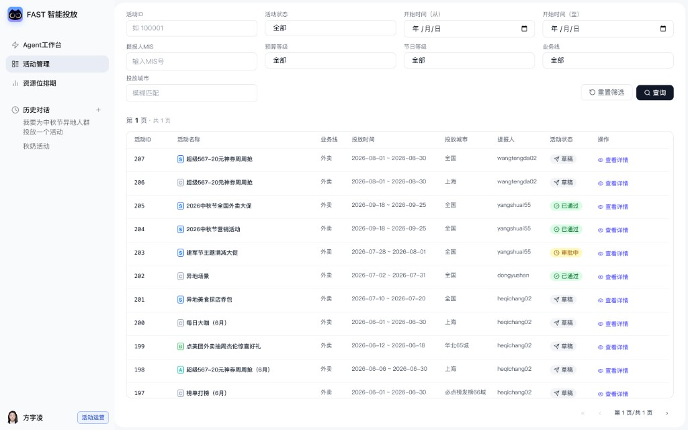
总结
这是一次设计全栈的体验，从先行只跑通功能进行初步测试，到最后的视觉呈现效果。本人作为设计师不光进行 AI coding 的能力学习，同时也更加认识到 AI 对于设计真正起到的作用。提效是一方面，身为设计师更能明显感知到我们的页面具体需要什么，生成的设计稿哪里不对、不符合我们的系统框架和项目逻辑。我会以这个项目为蓝本继续探索 AI 下的产品和设计。当设计不单单是设计，也许我们做到的更多、更好。